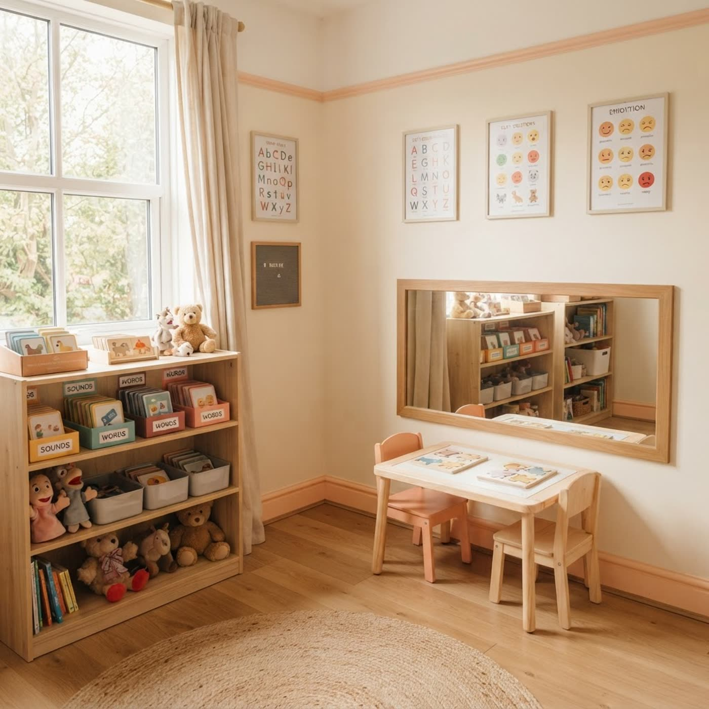

Речь начинает звучать — терпеливо, играя, без конвейера
Частный логопед-дефектолог в Минске. Помогаю, когда ребёнок молчит, не выговаривает звуки или отстаёт от сверстников, — и когда взрослому нужна уверенная, чёткая речь для работы и жизни. Одни руки от первой консультации до результата.

Нажмите звук — увидите, как его поставить
Семь звуков, с которыми приходят чаще всего. Схема показывает, где язык и губы в момент звука — так я объясняю артикуляцию на занятии.
Звук Р
Кончик языка поднимается к бугоркам за верхними зубами и вибрирует на сильном выдохе.
С кем и чем работаю — без конвейера
Малышам и дошкольникам
- Запуск речи: задержка развития, алалия, темпо-ритм
- Постановка звуков: Р, Л, С, З, Ш, Ж, Ч
- Дизартрия, заикание, голос и темп речи
- Мелкая моторика, внимание, память, мышление
- Подготовка к школе: связная речь и грамота
- Логопедический массаж — мягкие техники
Школьникам и особенным детям
- Трудности с чтением и письмом
- Связная речь и учебные навыки
- Занятия по дефектологии
- Сопровождение при ЗПР и СДВГ
- Дети с расстройствами аутистического спектра
Подросткам и взрослым
- Дикция и постановка голоса
- Ясность и убедительность речи
- Убираем слова-паразиты и речевые зажимы
- Формат: практика и обратная связь
Порядок, который не меняется
Консультация
Знакомство и диагностика: звуки, словарь, грамматика, дыхание. Около 40 минут. Со взрослыми — беседа о целях.
Индивидуальная программа
Честно: с чем работаем, сколько занятий понадобится и что делать дома.
Занятия
Детям — игра, игрушки, карточки и зеркало. Взрослым — практика. 30–45 минут.
Контроль прогресса
Срезы и обратная связь родителям после каждого занятия: что делать дома 5–10 минут в день.
Цены — от 50 BYN, фиксируются на первой встрече
Без скрытых доплат: стоимость, названная на диагностике, не меняется по ходу работы.
Что вы получаете на самом деле
Один специалист до результата
Частная практика: вас не передают «по кругу» — от консультации до результата ведёт тот, кто видел вас на диагностике.
15+ лет и сертификация
Логопед-дефектолог с опытом более 15 лет. Честные сроки: уже на диагностике ориентирую по результату и рамкам.
Кабинет, куда хочется вернуться
Уютная звукоизолированная комната в центре Минска: светлый интерьер, игрушки и пособия. И выезд, и онлайн — если так удобнее.
Команда центра «Империя Синтеза»
Комплексный взгляд: при необходимости подключаю остеопата и психолога центра — речь часто зависит от осанки, тонуса и уверенности.
Частые вопросы
С какого возраста можно приводить ребёнка?+
Занятия только в кабинете?+
Сколько занятий понадобится?+
Что делать между занятиями?+
Работаете со взрослыми?+
Напишите или позвоните — предложу ближайшие окна
Формат на выбор: кабинет, дом или онлайн. Первичная встреча — без очередей, в удобное время.
Контакты
+375 29 601-19-57Центр «Империя Синтеза»: Минск, ул. Кульман, 1к3. Будни и суббота, утренние и вечерние окна.
ООО «Империя Синтеза Инноваций» · УНП 193477509 · контактное лицо: Ольга